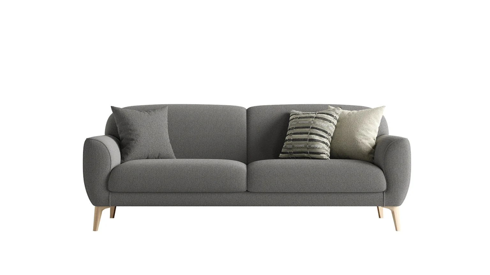
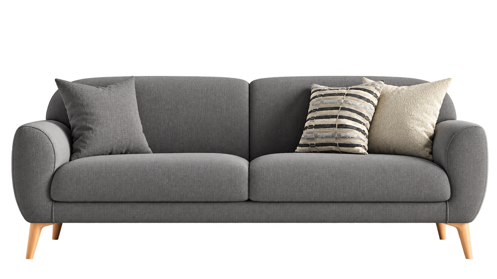
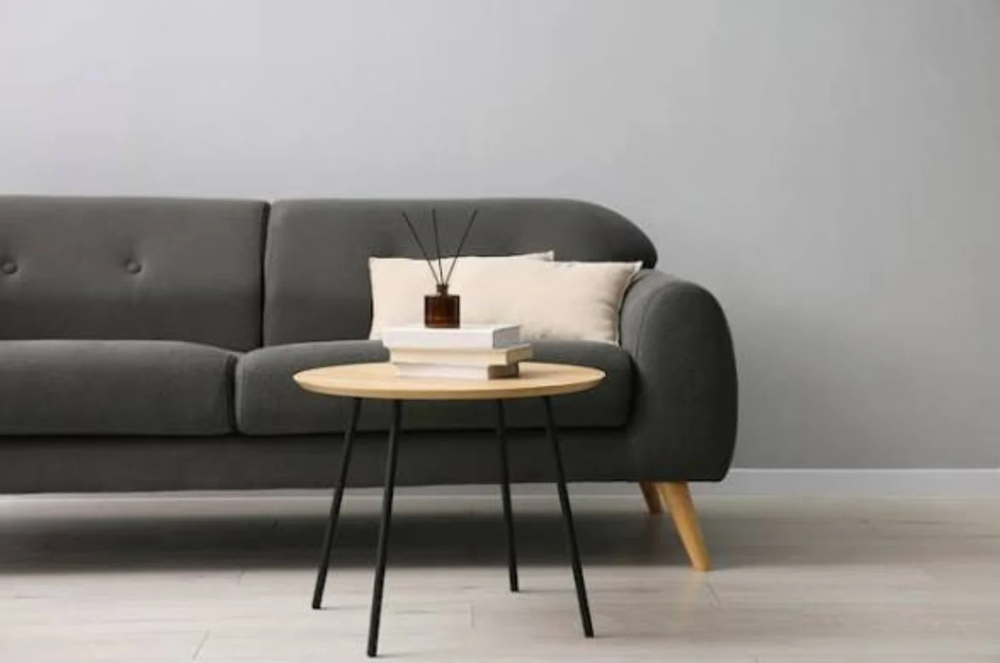

01 / SIGNATURE

Beautifully considered furniture for the moments that make a space your own.

Furniture with a softer point of view. Explore our studio's favourite ways to make a room feel like yours.
*Illustrative pricing. This is a fictional retail concept; no purchases are processed.

THE DETAILS MAKE THE DIFFERENCE.We believe the most inviting spaces don't ask for attention. They make room for the everyday — slow mornings, long conversations, and everything in between.
Natural textures, gentle contrasts, and the kind of comfort you can settle into. An invitation to create a home that feels like you.
BACK TO THE COLLECTION ↗